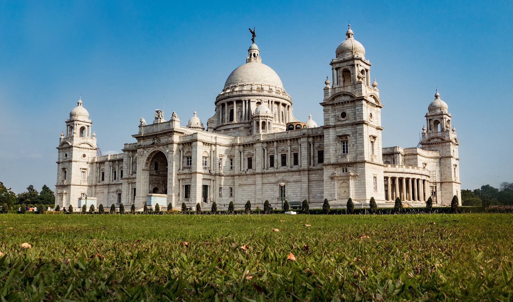
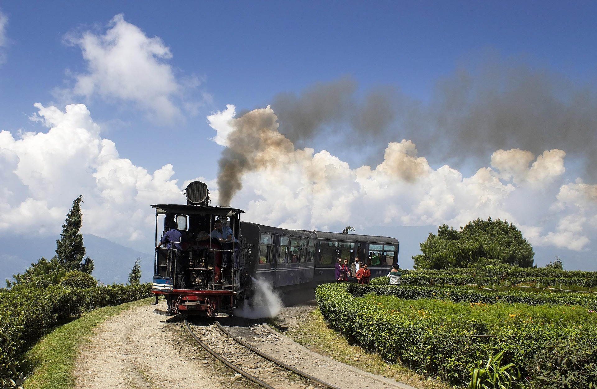
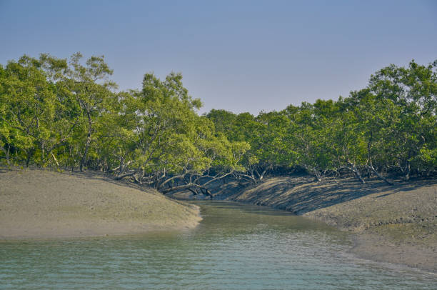
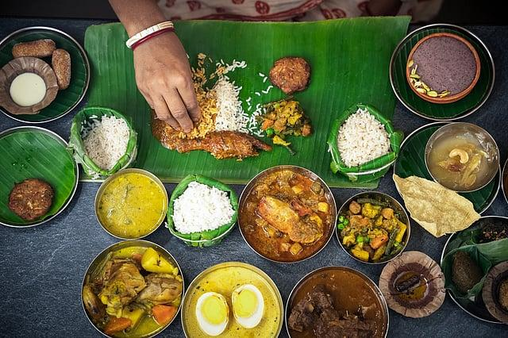

01
Kolkata
The City of Joy — famous for Victoria Memorial, Howrah Bridge, colonial architecture, tramways, and intellectual cafes.

Discover the rich literature, colonial charm, misty Himalayan slopes, mangrove wilderness, and unforgettable culinary flavours of Bengal.
Explore West Bengal ↓West Bengal is celebrated for its Nobel laureates, vibrant literature, terracotta temples, devotional classical music, Durga Puja festivities, and diverse geographical terrains.
From the historic streets of Kolkata and the scenic tea estates of Darjeeling to the UNESCO-protected mangrove forests of the Sundarbans, Bengal offers a soulful journey for every traveller.
Iconic destinations that make West Bengal globally renowned.

The City of Joy — famous for Victoria Memorial, Howrah Bridge, colonial architecture, tramways, and intellectual cafes.

Queen of the Himalayas — famous for Tiger Hill sunrise over Kanchenjunga, world-class tea gardens, and the Heritage Toy Train.

The world's largest mangrove delta forest, UNESCO World Heritage Site, and the natural habitat of the Royal Bengal Tiger.

A tranquil Himalayan hill station known for historic Buddhist monasteries, flower nurseries, and panoramic valley views.
Bengali cuisine is revered for its subtle use of Panch Phoron spices, fresh river fish, aromatic mustard gravies, and legendary dairy sweets.

Home of Rabindranath Tagore, Swami Vivekananda, and master filmmaker Satyajit Ray, shaping modern Indian fine arts.
A UNESCO Intangible Cultural Heritage festival turning entire cities into open-air contemporary art installations.
Mystical Baul folk singing and Rabindra Sangeet melodies deeply woven into everyday Bengali households.
Intricate Kantha stitch embroidery, Bankura terracotta horses, Dokra metal craft, and handwoven Jamdani sarees.
Discover 28 states, rich culinary traditions, and centuries of living heritage.
← Back to All States